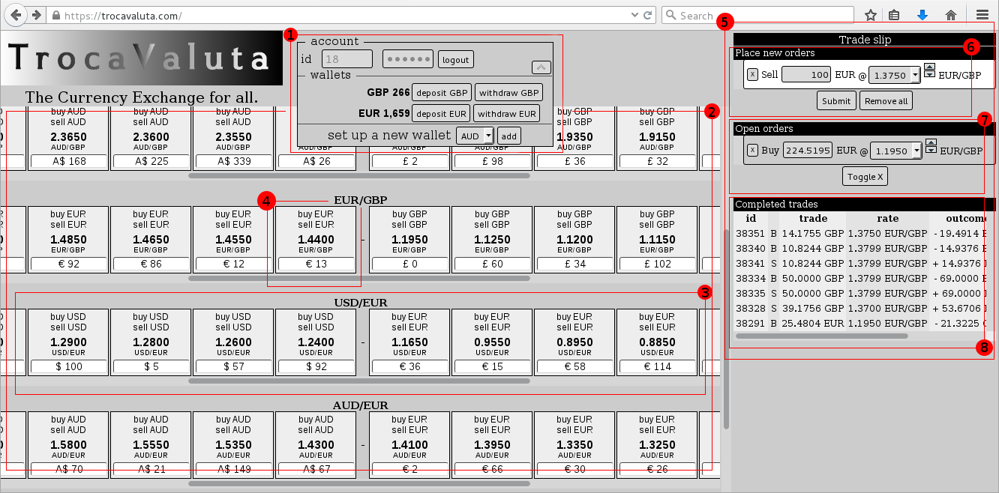

Elements in the user interface
This panel allows to
User can manage as many wallets as different currencies are supported by the Exchange. For each wallet the user can:
A list of available markets
The place where liquidity of the two currencies that define a market can be found.
The market is composed of two sides, the left hand side has the higher rates, and the liquidity of the weaker currency accumulates on this side.
The right hand side of the market has the lower rates, and the liquidity of the stronger currencies accumulates on this side.
Around some middle-term rate is where both fronts face each other, in a zoine called the gap -or spread-, and is where the next trade will occur.
Fronts move towards any side as a consequence of the trading activity induced by the offer/demand, and the gap is naturally centered around the price indicated by the Forex or any other indicator that influences people at any time.
Each box represents a queue where money waits until its matching counterpart come, is then when a trade is finaliced and money goes to the corresponding wallet of each user implied in the trade.
There is a box for each allowed rate -the rate can be understood as the price of the money-, and all the available money is scheduled to be traded at the marked rate. Any user can sell or buy here their money.
The money is always matched with the better offer available, so if you try to buy EUR at 1.3200 but there exist liquidity at 1.3150 the exchange will match the former first.
The right hand side of the screen is dedicated to define accurately our trading operations.
When clicking any of the Buy/Sell links in any Trade Box a new item will show up in this area, being able to tailor the exact values of the intended operation. After specifying the exact amount and the precise rate limit the user can submit the order/s to the exchange (one or more) all at once.
After submitting orders it can happen two things, some or all the money can be matched with the available liquidity of the market, and/or some or all of the money cannot be matched and as a consequence it remain in a waiting state until any other user closes the trade.
Orders listed here are in waiting state, all of part of the amount could not be matched instantly when the order was submitted, so they remain in queue.
Orders here can be modified, their amount can be increased or decreased and the rate can also be altered, giving the user the flexiibility they require for their trading.
A detailed table is shown here with each completed traded shown in each row
The information shown is the type of operation (buy/sell) of which currency, the amount sold/bought, the real rate (remember that a trade can involve several queues of different rates so the final rate doesn't need to match any of those shown in the market), the amount of currency received and the commission paid. The system charges 0.05% of the received amount and currency on each trade.
This trading front-end is designed for users trading manually.
There exists a powerful API that can be used to run trading bots allowing advanced users to programatically schedule operations based on rules, stop-loss triggers, indicators, etc remotelly using any technology that can connect to standard sockets, REST/JSON API
.